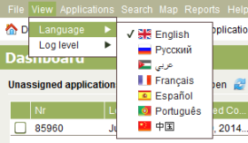

The Registry Desktop supports English, Russian, Arabic, French, Spanish, Portuguese and Chinese languages for display of labels, messages and reference values. To change the language, select your preferred language from the View > Language menu option on the main menu. Once a selection is made, SOLA will automatically restart displaying the selected language.

Change Language